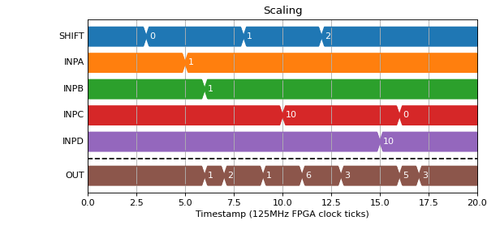
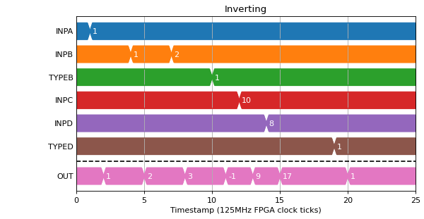

CALC - Position Calc
The position calc block has an output which is the sum of the position inputs
Fields
Name |
Type |
Description |
|---|---|---|
INPA |
pos_mux |
Position input A |
INPB |
pos_mux |
Position input B |
INPC |
pos_mux |
Position input C |
INPD |
pos_mux |
Position input D |
TYPEA |
param enum |
Source of the value of A for calculation
0 Value
1 -Value
|
TYPEB |
param enum |
Source of the value of B for calculation
0 Value
1 -Value
|
TYPEC |
param enum |
Source of the value of B for calculation
0 Value
1 -Value
|
TYPED |
param enum |
Source of the value of B for calculation
0 Value
1 -Value
|
SHIFT |
param uint |
Number of places to right shift calculation result before output |
OUT |
pos_out |
Position output |

{kind=link}
{kind=link}
Scaling
The scale factor is a bit shift and is applied after the sum.
(Source code, png, hires.png, pdf)
{kind=link}
{kind=link}

Inverting
Each input can be individually inverted before they are added together
(Source code, png, hires.png, pdf)
{kind=link}
{kind=link}
